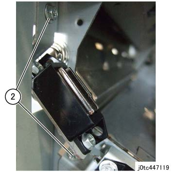
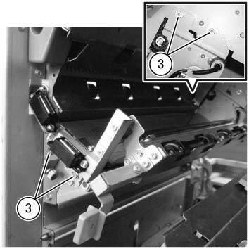
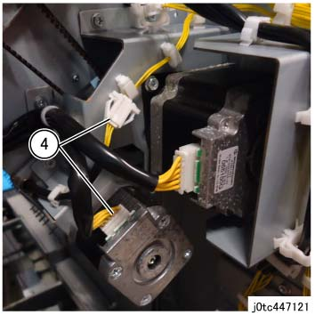
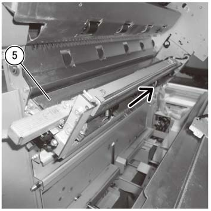
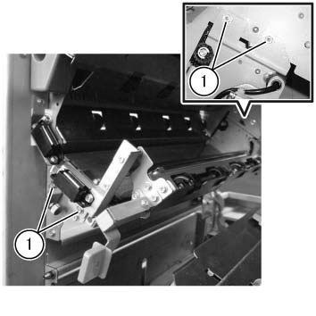
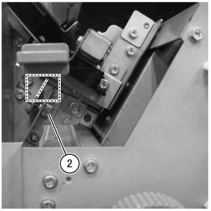

REP 47.20.1 裁切器 Regi. 滑槽 组件 
参考 PL:PL 47.20
Removal

执行IOT关机步骤. 确认电源已关闭并拔掉电源插头.
拆卸 裁切器 单元 组件. (REP 47.25.1)
拆卸后盖板. (PL 47.2)
拆卸 裁切器 Regi. 滑槽 组件. (PL 47.20)
拆卸 调整 支架. (PL 47.20)
拆卸 Magnet Catch. (图 1)

(图 1) tc447119
拆卸螺钉（x4）. (图 2)

(图 2) tcw447047
断开连接器（x2） 在后面. (图 3)

(图 3) tc447121
拆卸 裁切器 Regi. 滑槽 组件 in the 方向 的 arrow. (图 4)

(图 4) tcw447113
安装
If 裁切器 Regi. 滑槽 组件 已 removed, 执行 Regi. 调整 用于 裁切器.
打开前盖板. (PL 47.1)
拆卸 裁切器 Inner 盖板. (PL 47.1)
执行 Regi. 调整.
松开螺钉 (x4).

(图 5) tcw447048
转动 调整 螺钉 和 调整 位置 的 调整 支架 so 该 the triangular mark aligns 和/与 ...的中心 the marking on 框架 侧面.
The 调整 支架 移动 向右 当...时 the 调整 螺钉 is rotated clockwise.
The 调整 支架 移动 向左 当...时 the 调整 螺钉 is rotated counterclockwise.
Guideline 用于 one mark 在...上 scale: 1.0mm 歪斜 数量 (converted 用于 200 mm)

(图 6) tcw447049
在...之后 the 调整, 拧紧螺钉.